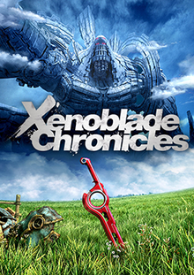

Xenoblade Chronicles is an action role-playing game developed by Monolith Soft and published by Nintendo for the Wii. Initially released in Japan in 2010, it was later released in the PAL regions in 2011 and then in North America in 2012. A port for the New Nintendo 3DS was released in 2015, and a remaster for the Nintendo Switch was released in May 2020. Xenoblade Chronicles is the first entry in the Xenoblade Chronicles series, a subseries which forms part of the larger Xeno metaseries. Although no direct narrative connections exist to previous Xeno games, it incorporates aesthetic and narrative elements from both fantasy and science fiction. The game features navigation through an open world split into zones, side-quests tied to party members' affinity, and a real-time action-based battle system which incorporates the main character's ability to see brief glimpses of the future.
Xenoblade Chronicles takes place on the frozen bodies of two warring titans, the Bionis and the Mechonis. The people of Bionis, including the human-like Homs, are in a perpetual war with the Mechon machine race of Mechonis. Key to the Homs' efforts in fighting against the Mechon army is the Monado, a sword that is said to have been wielded by the Bionis. During an attack on his colony, the main protagonist Shulk discovers his ability to wield the Monado and sets out on a quest for revenge with his best friend, Reyn, with others joining in as the game progresses.
